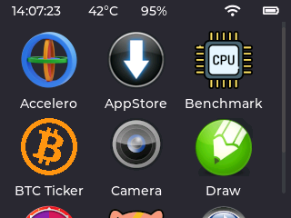
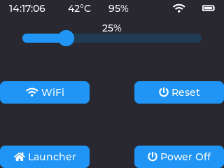
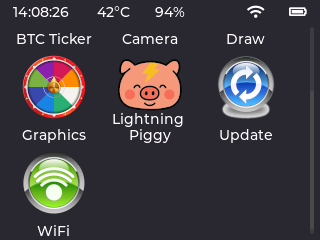
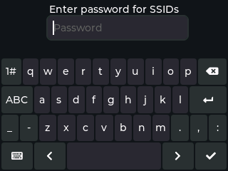
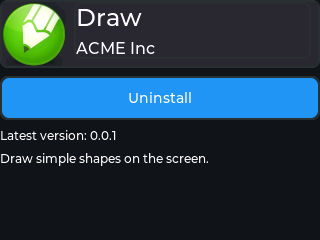
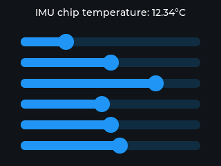

Why MicroPythonOS?
MicroPythonOS is a lightweight, fast, and versatile operating system designed to run on microcontrollers like the ESP32 and desktop systems. With a modern Android-like touch screen UI, built-in Bitcoin Lightning wallet, App Store, and Over-The-Air updates, it’s the perfect OS for innovators and developers.
Key Features
- Runs on ESP32 microcontrollers and desktops
- Android-like touch screen UI with gestures
- Built-in Bitcoin Lightning wallet (supports Nostr Wallet Connect & LNBits)
- App Store for easy app access
- Over-The-Air (OTA) updates
- Supports touch screens, IMUs, and cameras
- Fast and lightweight performance
Advantages
- Native MicroPython foundation for easy development
- Cross-platform compatibility (microcontrollers to desktops)
- Lightweight design for resource-constrained devices
- Fast execution with quick boot times
- Modern touch screen support with gestures
- OTA updates for seamless maintenance
- Bitcoin Lightning wallet for decentralized payments
Possibilities
- Build IoT devices like smart home controllers
- Create educational tools with interactive displays
- Develop decentralized payment systems with Bitcoin Lightning
- Design portable touch screen devices
- Power robotics with IMUs and cameras
- Craft smart wearables with gesture controls
- Prototype DIY projects effortlessly
Screenshots






 Check out MicroPythonOS on GitHub
Check out MicroPythonOS on GitHub
Contact: info@MicroPythonOS.com